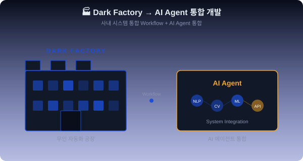

삼성전자 반도체 — 후배 멘토링 노트
삼성전자 DS 개발자 4년차
DIT 센터 정직원 (2022.06 입사)
서강대학교 컴퓨터공학과
42서울 4기
Java/Spring · Python · React
Kubernetes · Cloud Native
SBA 최우수팀 · 삼성SDS Pro 인증
SUAPC 16등 · 통신학회 논문
📚 「개시반 공부법」 출간 (100권 판매) · 🏅 Kubernetes 한글화 컨트리뷰션 · 📝 위기 상황 예측 AI 클라우드 네이티브 논문
🏭 Dark Factory — 사람이 직접 라인에 들어가지 않고 모든 공정이 자동화되는 무인 공장. 현재 회사가 나아가는 방향성. 내 업무는 그 핵심 인프라를 코드로 구축하는 것.

💡 한 명의 사람은 절대 회사를 이길 수 없고, 회사는 산업을 이길 수 없고, 산업은 시장을 이길 수 없다.
삼성은 아는 만큼, 쓰는 만큼 누릴 수 있다.
결혼식장 지원 부모 부양 자녀 학자금
| 항목 | 현실 |
|---|---|
| 평가 성향 | 실력주의보다 호봉주의가 강함 |
| 학벌/순혈 | 존재함 (단, 고위급은 예외 가능) |
| 리스크 | 도박성 기피 → 보수적 성향 |
| 근무 위치 | 🔴 화성·기흥·동탄·평택·천안 (위치적 단점 큼) |
| 직무 현실 | 개발자/데이터 분석가도 반도체 라인(Fab)에서 FOUP·웨이퍼 운반 가능 |
| 직장 분위기 | 경직되고 수직적. 드라마 속 전형적인 대기업 직장생활 |
| 직급 | 지급 주수 |
|---|---|
| CL1 · CL2 | 400주 |
| CL3 · CL4 | 600주 |
⚠️ 반도체는 사이클이 강한 산업. 연봉이 잘 쳐줄 때는 경쟁자도 다 안다 → 저평가 시기 진입이 유리
| 구분 | 유리한 조건 (순위) |
|---|---|
| 신입 | 석박사/산학장학생 > 인턴 > 일반 정규 |
| 경력 | 유사 업계 하청 or 동급 이직 추천 |
| 비추천 | 삼성 계열사 내 이동 (SDS→전자) |
📌 학사 취업 시 반드시 인턴 거칠 것
🏭 자연 → 광물 → 원자재 → 설비 → 공장 → 하드웨어 → 반도체 → 인프라 → 소프트웨어 → AI
최하단부터 최상단까지 모든 스택을 자체 내재화하는 회사. 이렇게 모든 스택을 소화하는 회사는 흔치 않다.
대규모 일반 유저 트래픽(B2C)을 다룰 일은 거의 없는 철저한 B2B 회사. 이 점을 명확히 인지해야 한다.
📌 자기소개서보다 이력서 자체가 더 중요하다
현장실습 > 삼성 인턴 > 학부연구생 순으로 많이 받음
무엇을 했는지보다 왜 그곳에서 그 활동을 했는지가 더 중요
🚨 가장 위험한 생각: "나중에 어떻게든 되겠지" → 4학년 때 시작하는 건 늦다
사내 전배는 회사 안에서 '이직 시장'처럼 동작합니다. 두 가지 경로가 있어요.
① 잡포스팅: 인력이 필요한 부서에서 사내 공고를 올리면 본인이 직접 지원.
② 스카웃: 타 부서와 협업 중 업무 능력을 인정받아 차출되는 방식.
단, 최소 2~3년 근무 + 평판 관리가 필수. 현재 부서에서 먼저 실력을 증명하는 것이 첫걸음.
네트워크/인프라 이해 + 다양한 실패 경험이 가장 중요합니다.
데브옵스는 수십 개의 파편화된 앱을 하나의 플랫폼으로 통합하고, 트래픽 폭증 시 시스템이 죽지 않도록 방어하는 역할입니다.
C, JS, Python, Java 등 다양한 언어로 직접 시스템을 만들어보고, Kubernetes 같은 컨테이너 환경과 PostgreSQL 등 DB가 어떻게 맞물려 돌아가는지 전체 아키텍처를 볼 줄 알아야 합니다.
직접 만들고, 트래픽 받아보고, 서버를 터뜨려보며 복구해 본 경험이 가장 강력한 무기.
다양한 개발 경험 + 새 기술을 빠르게 흡수하는 유연성. 데브옵스 생태계는 끊임없이 새 툴이 쏟아짐 → 주저 없이 써보고 적용하는 태도 필수.
하드웨어 중심. 백본망, L4 로드밸런서, 스위치 등 네트워크 기기 동작 원리를 딥하게 이해하고 직접 다뤄보는 경험이 핵심.
삼성은 엄청난 규모의 사내 네트워크를 외부망과 분리하여 100% 내부 인력으로 자체 관리 → 인프라 인력 수요·TO 많음. 하드웨어와 네트워크 아키텍처에 맞다면 깊게 파보는 것도 좋은 전략.
과거엔 뭘 좋아하는지조차 몰라 닥치는 대로 해봤습니다 — 게임 개발, 웹 디자인, 앱 출시, 데브옵스 교육, 컨퍼런스, 창업(중국 수입·적자), 심지어 고깃집·파스타집 알바까지.
그 치열한 '탐색' 덕에 '나'라는 사람의 해상도가 선명해졌습니다. 30대 이후는 '선택과 집중'의 연속 — 하나의 길을 오롯이 파야 합니다.
대학생 때 최대한 많이 부딪히고 실패하며 자신의 해상도를 높여가길.
입사만 하면 모든 관문이 끝나고 행복한 결말이 남을 줄 알았지만 착각이었습니다. 저는 지금 자신이 성공했다고 단 한 번도 생각해 본 적 없습니다.
본업 + 재테크 + 연애 + 커리어 관리 + 운동 + 취미 — 모든 것을 동시에 쌓아올리는 지금의 밀도는 대학 때와 차원이 다릅니다.
대기업 취업이 끝이 아니라, 진짜 어른의 삶과 평생 성장이 시작되는 출발선.
단단히 각오하고 들어오세요. 압도적인 보상에는 이유가 있습니다. '삼전어선(원양어선)'이라는 말이 생겼으면 좋겠다고 농담 반 진담 반으로 이야기합니다 — 그만큼 업무 강도가 높고 치열하게 일해야 합니다.
하지만 묵묵히 버티며 성과를 내면, 회사는 미래와 경제적 보상을 확실하게 보장합니다. 하이 리스크, 하이 리턴의 정직한 룰.
조직이 거대하고 수직적일 것 같지만, 기술적 소통은 꽤 넓은 범위가 보장됩니다. 개인 개발자의 합리적인 의견이나 기술 제안이 위쪽으로 전달될 수 있는 '열린 창구'가 사내에 충분히 마련되어 있습니다.
본인의 논리와 실력만 명확하다면, 거대 조직 내에서도 목소리가 기술 의사결정에 분명히 반영됩니다.
"돈이 있는 곳에 반드시 보상이 따른다.
보상이 따르면서 근속 연수까지 높은 곳에 가면 좋지."
질문 & 토론 환영합니다